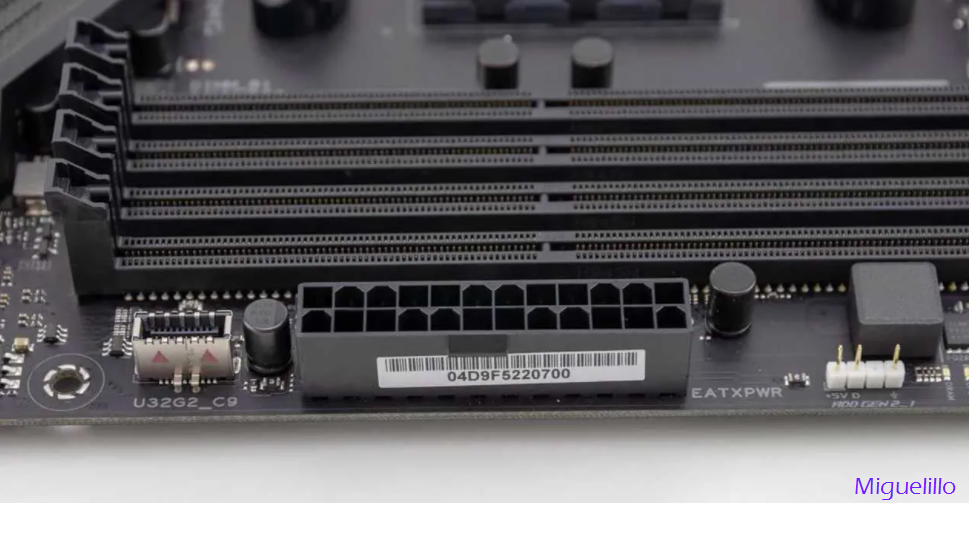
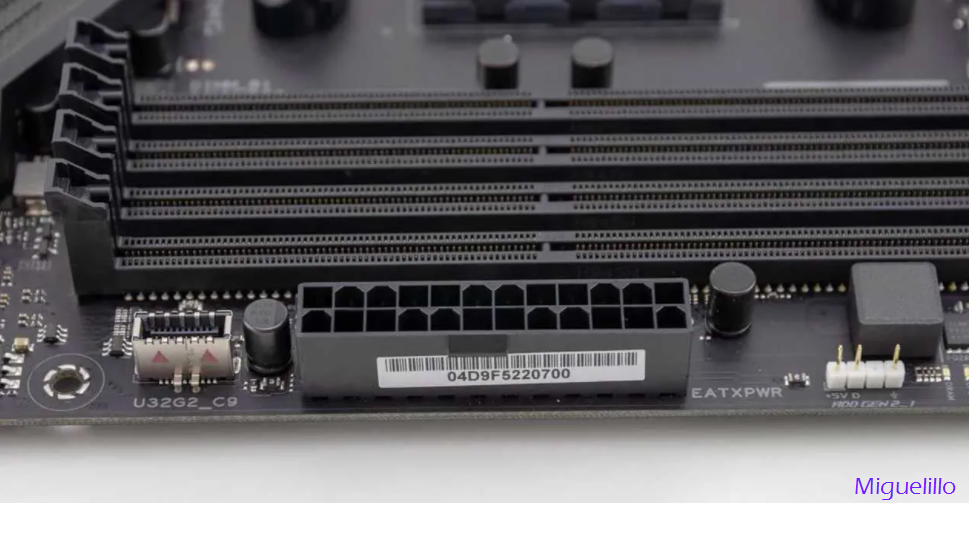

El cable ATX de 24 pines o conector principal de la placa base es uno de los cables que necesitas conectar a la placa base de tu PC. Este cable utiliza un conector grande de 24 clavijas, que es el conector más grande que se encuentra en la fuente de alimentación.